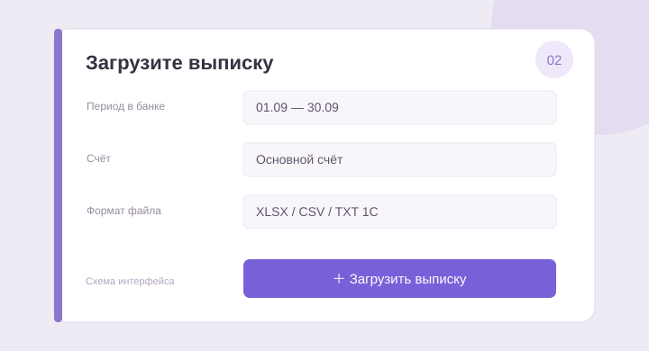
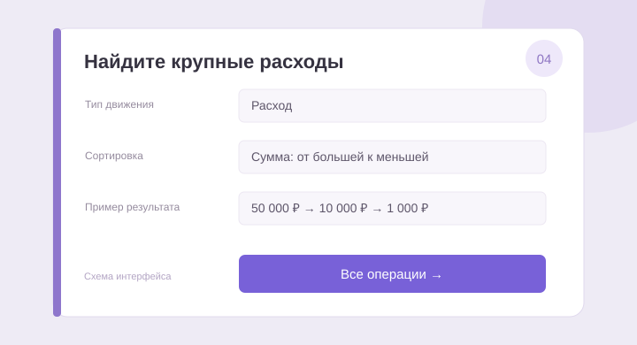
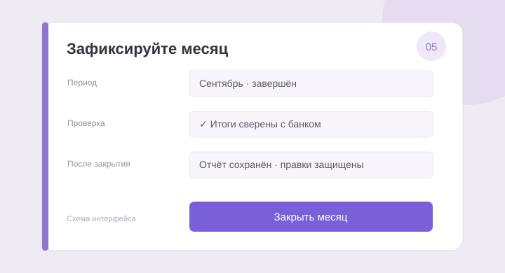

Поступления
0 ₽Все зачисления за периодФИНАНСЫ ПОД КОНТРОЛЕМ
Движение ваших денег
Вся картина бизнеса — от поступления до последней комиссии.
Демонстрационные данные · это пример, не ваши выписки
В этом браузере есть данные прежней версии. Их можно перенести в аккаунт.
₽ Российский рубль
Списания
0 ₽Все расходы и переводыДенежный поток
0 ₽Поступления минус списанияРасчётный остаток ◉
—Загрузите выписку▤↗✓
НАЧНИТЕ С ОДНОЙ ВЫПИСКИ
Разберёмся, куда уходят деньги
Загрузите выписку из банка. Приложение прочитает операции,
разделит приход и расход, предложит категории.
XLSX, XLS, CSV, 1С TXT · PDF с текстовым слоем
Денежный поток
Поступления и списания по месяцам
Приход Расход
На что уходят деньги
Списания по категориям
Последние операции 0
Нажмите на операцию, чтобы посмотреть детали
Категории определяются по назначению платежа и требуют проверки. Денежный поток не равен прибыли. Остаток рассчитан только по загруженным движениям.
Сортировка сумм учитывает размер платежа без знака: расход 50 000 ₽ больше расхода 1 000 ₽.
Переводы собственных средств показаны отдельно. Категорию любой операции можно изменить в её карточке.
Данные сохраняются в вашем аккаунте. Оригиналы выписок доступны во вкладке «Архив файлов». При входе с другого устройства откройте тот же аккаунт.
Загруженные выписки
Закрытие фиксирует итоговый отчёт и защищает историю до конца месяца от изменений. Для исправлений откройте месяц заново; причина и предыдущий отчёт сохранятся.
Проверка перед закрытием
Закрытие — фиксация управленческого отчёта. Оно не отправляет отчётность в банк или налоговую.
История закрытий
Здесь хранятся исходные файлы, загруженные в этот аккаунт. Удаление операций из списка выписок не удаляет оригинал из архива.
ПЯТЬ ПРОСТЫХ ШАГОВ
От первой выписки до закрытого месяца
На схемах — вымышленные суммы и пример интерфейса. Следуйте шагам по порядку.
ШАГ 01
Создайте аккаунт и войдите
Нажмите «Создать аккаунт», укажите имя, email и пароль от 8 символов. Email — ваш логин. Если включено подтверждение почты, перейдите по ссылке в письме и войдите. На телефоне используйте тот же аккаунт.
Кнопка «Забыли пароль?» отправит письмо для установки нового пароля.

ШАГ 02
Выгрузите выписку из банка
Выберите нужный счёт и полный календарный месяц. Скачайте все операции: и приход, и расход. Предпочтительны XLSX или TXT 1С. Поддерживаются также XLS, CSV и PDF с текстовым слоем; фотографии и сканы не поддерживаются.
В «Потоке» нажмите «Загрузить выписку» и выберите файл на компьютере или телефоне. Можно выбрать несколько файлов.
ШАГ 03
Проверьте распознавание
Сверьте счёт, даты периода, приход и расход с итогами банка. Укажите входящий и исходящий остатки. Дебет означает списание, кредит — зачисление. Если данные не определились, откройте настройку колонок и выберите правильный лист.
Разберите все предупреждения. Поставьте отметку «Я проверил…» и нажмите «Добавить операции». Оригинал сохранится в архиве. Повторная загрузка того же файла не добавит операции второй раз.

ШАГ 04
Посмотрите, куда ушли деньги
В «Обзоре» показаны приход, списания, поток и остаток. Во «Всех операциях» выберите месяц, счёт, тип движения и сортировку суммы. Нажмите на операцию, чтобы увидеть назначение платежа и изменить категорию.
Суммы сортируются по размеру без учёта знака. Для крупных расходов выберите «Расход» и «Сумма: от большей к меньшей». Собственные переводы не равны расходам бизнеса; они выделены отдельной категорией.

ШАГ 05
Закройте месяц и вернитесь к архиву
В «Закрытии месяцев» выберите завершившийся месяц и проверьте итоги по каждому счёту. Для расчёта нужен входящий остаток на начало месяца. Сверьте полноту выписок, отметьте проверку и нажмите «Закрыть месяц».
Отчёт сохранится в истории. Правки прошлых операций блокируются, потому что они меняют остатки. Для исправлений открывайте закрытые месяцы с самого позднего, укажите причину, внесите изменения и закройте снова.
В «Архиве файлов» выберите месяц или найдите файл по названию. «Скачать оригинал» возвращает загруженный файл, «Операции» показывает записи из него.
ЕСЛИ ЧТО-ТО НЕ СХОДИТСЯ
Частые вопросы
Почему остаток не указан?
Нужен входящий остаток выписки. Для закрытия месяца он должен быть известен на начало месяца или раньше. Проверьте раздел «Выписки и счета».
После обновления мои старые данные не появились
Войдите и используйте «Перенести данные» или восстановите JSON-копию старой версии. Ранее браузер не сохранял оригиналы файлов — повторно загрузите исходную выписку, чтобы добавить её в архив.
Данные изменились в другой вкладке
Нажмите «Обновить данные» и повторите действие. Проверка версии не даёт затереть изменения с другого устройства.
Что входит в резервную копию?
Операции, сведения о выписках, история отчётов и список файлов. Оригиналы нужно скачивать отдельно из архива. При восстановлении копии заменяются операции; серверная история закрытий сохраняется.
Где ИИ?
В этой версии ИИ не подключён. Категории предлагаются по правилам и проверяются вами.
Есть ограничения?
До 30 МБ на файл и 20 000 операций в аккаунте. Учёт в рублях. Сохраняйте резервные копии и проверяйте итоговые суммы по банку.